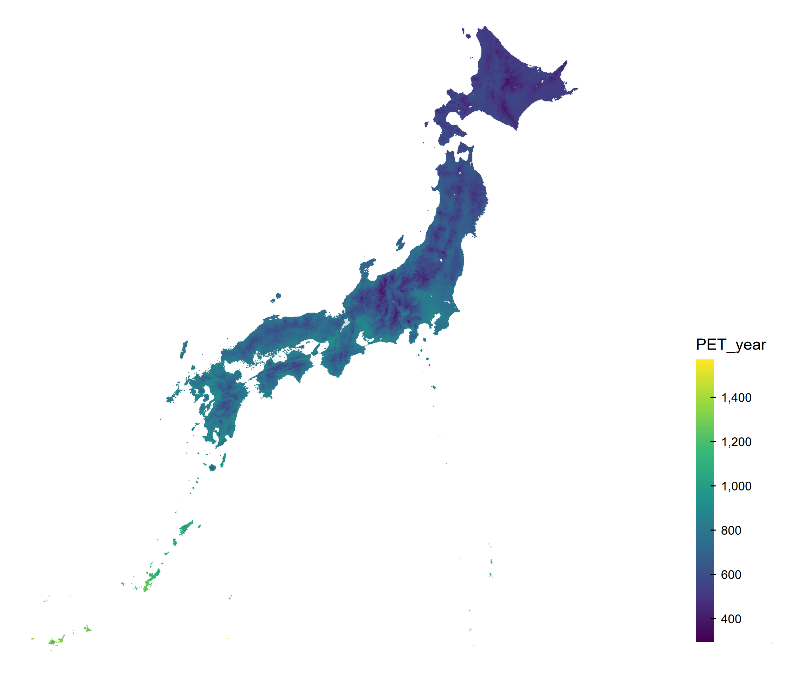
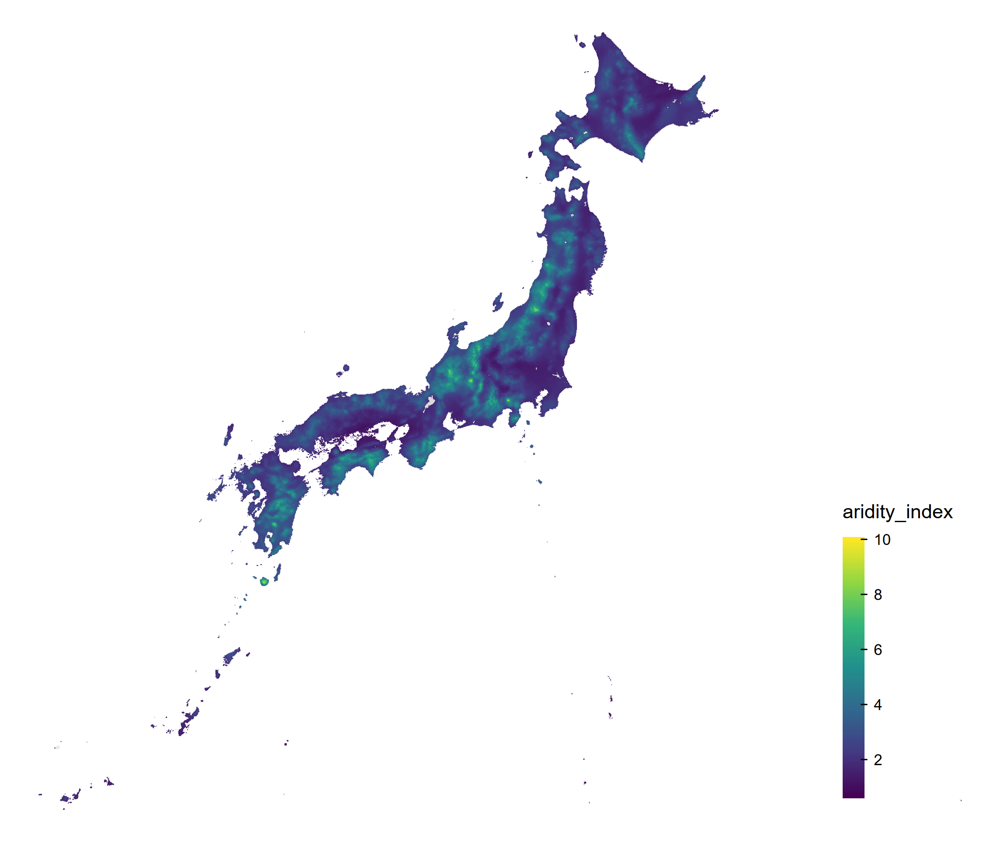

Appendix G — Plot Japan Climate Map
tmapパッケージを使用して、日本の気候マップを描画します。 rnaturalearthパッケージは、日本地図を描画するために使用します。
データの読み込み
このリポジトリの解析では、環境変数 PROJECT_DATA_DIR にデータの保存先を指定しています。 必要に応じて、適宜変更してください。
data_dir <- Sys.getenv("PROJECT_DATA_DIR")
sf_climate <- readRDS(file.path(
data_dir,
"climate_mesh_data_joined/climate_mesh_data_with_aridity_index.rds"
))Evapotranspiration (PET)の描画
日本地図を描画するには、rnaturalearthhiresパッケージが必要です。
tmapの描画は、ggplot2の描画のように、レイヤを重ねる形で行います。 まず、日本地図を描画し、その上に気候変数を描画します。 その後、レイアウトを調整して完成です。
保存したい場合は、tmオブジェクトをtmap_save()関数に渡すことで、描画を保存できます。
#renv::install("ropensci/rnaturalearthhires")
variable <- "PET_year"
japan <- ne_states(country = "Japan", returnclass = "sf")
sf_plot <- sf_climate[!is.na(sf_climate[[variable]]), ]
tm <- tm_shape(japan, crs = 4612) +
tm_polygons(col = "gray90") +
tm_shape(sf_plot[, variable], crs = 4612) +
tm_fill(
fill = variable,
fill.scale = tm_scale_continuous(
values = "viridis"
),
fill.legend = tm_legend(
title = variable,
reverse = TRUE,
position = c("right", "bottom"),
frame = FALSE,
bg.color = "transparent"
)
) +
tm_layout(
frame = FALSE,
bg.color = "transparent"
)
print(tm)
output_dir <- "output"
dir.create(output_dir, showWarnings = FALSE, recursive = TRUE)
tmap_save(
tm,
filename = file.path(
output_dir,
paste0("japan_climate_map_", variable, ".png")
),
dpi = 300
)結果は以下のようになります。

Note描画関数
-
tm_polygons()は、ポリゴンを描画するための関数です。境界線と塗りつぶしの両方を描画します。 -
tm_fill()は、塗りつぶしのみを描画するための関数です。境界線は描画しません。 -
tm_borders()は、境界線のみを描画するための関数です。塗りつぶしは描画しません。
今回のようにポリゴンが小さく、多い場合は、境界線を書いてしまうと塗りつぶしが見えなくなってしまうことがあります。 そのため、今回はtm_fill()を使用して、塗りつぶしのみを描画します。
Aridity Indexの描画
次に、Aridity Indexを描画します。
variable <- "aridity_index"
japan <- ne_states(country = "Japan", returnclass = "sf")
sf_plot <- sf_climate[!is.na(sf_climate[[variable]]), ]
tm <- tm_shape(japan, crs = 4612) +
tm_polygons(col = "gray90") +
tm_shape(sf_plot[, variable], crs = 4612) +
tm_fill(
fill = variable,
fill.scale = tm_scale_continuous(
values = "viridis"
),
fill.legend = tm_legend(
title = variable,
reverse = TRUE,
position = c("right", "bottom"),
frame = FALSE,
bg.color = "transparent"
)
) +
tm_layout(
frame = FALSE,
bg.color = "transparent"
)
print(tm)
tmap_save(
tm,
filename = file.path(
output_dir,
paste0("japan_climate_map_", variable, ".png")
),
dpi = 300
)結果は以下のようになります。
